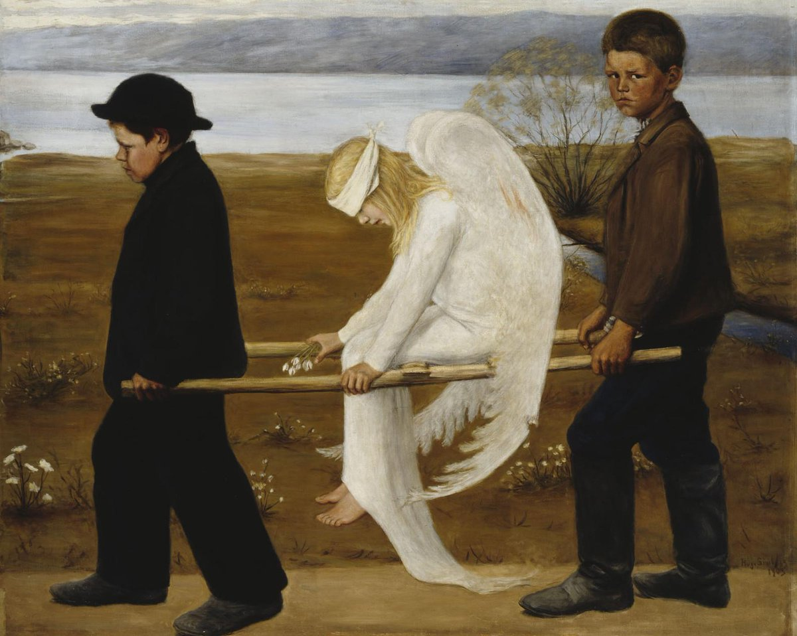

2001
Amsterdam
- I’m living and working in Amsterdam, Netherlands.
- I work for Philips Electronics as a webmaster.
- Brian, my boyfriend, drives over to help me move back to the UK.
Meeting Brian
- Brian and I had met in London on one of the weekend trips back home I made in the Autumn of 2000.
- Usually I met my best friend Jennifer and somehow we had bumped into Paul, Brian, and Niall, or she had met them and they’d all arranged to meet me when I came back, I cannot remember the details.
- Brian and I rendevouzed in the Holiday Inn Brent Cross, and the first time we went there my friend Jennifer and Brian’s brother Niall were there too and they were supposedly interested in each other except Niall wasn’t really interested in Jen.
- There was a lot of cocaine flying around.
- Whenever I came back to the UK to meet Brian, we would stay there.
- He told me once that his brother Aamon had told him about the Holiday Inn Brent Cross.
- It was an unusual comment, like, what would you need to be told about?
- It is May probably.
- We stay at a Holiday Inn brand hotel near to the Rivierenbuurt where I lived in an attic room with no washing facilities (apart from one tap) and a chemical toilet in a small cupboard outside the door.
- As we’re driving out of the hotel carpark, on our way to take the boat from Rotterdam, I see something strange.
- A black sedan-type car cuts us up while we’re approaching the carpark exit.
- A woman is sitting in the front. She is wearing a thick white blindfold.
- Behind this car is another car of a similar nature.
- The two black cars have a motorbike police escort and are driving in an aggressive manner, way over the speed limit.
- Brian brakes hard, and swears quietly.
- In the car behind, sitting in the back seat, slunk down low, is an extremely ugly man. Really, really ugly.
- His ugliness startles me.
- After they speed off, I ask Brian if he saw the people in the cars?
- He said he hadn’t.
- So I told him what I saw, because it was so strange.
- I believe this was the same man who stalked me on X, and followed me around Lourdes and Cauterets with a woman in August 2024.
- I also believe he’s very, very famous.
- His sinister appearance that day (not his ugliness, the fact he was there, and perhaps a bad feeling about something I was consciously unaware of having happened…) concerned me enough that I described him in the supplementary page to my handwritten letter that I send to international law enforcement organizations and the mass media in August 2024.
- While thinking about the events from the past, I have a sense of being in the Amsterdamse hotel bar the previous night in 2001 with Brian, and meeting a bunch of foreign, brutish, olive-skinned men.
- Did I tell one of them he was greasy?
- Did they tell us they were dockers?
- The driver of one of the cars looked exactly like the younger brother of the first switcheroo trumpet teacher.
- If I’m right, this is the same man who stalked me at my apartment in Lourdes in 2021.
Memories of the past triggered on X
- I had forgotten about this event, it was so long ago.
- However, the woman in the screeching car wearing a thick white blindfold meant I would never fully forget it.
- The memory was triggered online in November 2024 by a post from an account that had been significantly involved in the cyber-stalking activity on X: @january_myth.
- I write extensively about the
@january_myth account here.
- I believe Hazel/(Fiona) Smith was/is managing this account primarily but I could be wrong; the North London gangs’ cyber-stalking tech seems to me, after some consideration, to be way more primitive than this.
- Anyway, in October 2024, the account posted this picture: https://x.com/january_myth/status/1846980956680278115.

- This image, coupled with the extremely ugly man who had stalked me on X and in person in the Pyrenees just a couple of months before, triggered a memory of what I had seen in Amsterdam with Brian in 2001.
- My thoughts and feelings about the blindfold lady have always been related to justice.
Asking Brian if he remembered Ugly in 2024
- Of course, the moment I remembered the strange event I contacted Brian about it.
- The curious thing about that was we had just days previously had a long and healing chat on Facebook about our relationship.
- Was Brian prompted to contact me at that time?
- If so, who prompted him?
- I certainly did not initiate the communication because I had always found that risky.
- When I asked him if he remembered the ugly guy in the car and the blindfold woman that morning in 2001, he said something very strange.
- He said: “oh, we were very high those days”.
- He then blocked me.
- It didn’t concern me again until I was able to think straight about things, over a year later.
- I also contacted some other old friends about it including Paul and Brian’s brother Niall (who sounded like Henry’s Cat when he spoke).
- Niall Higgins blocked me after I messaged him one word: Ugly.
- And Paul gaslit me, again, which is really getting very boring.
What I didn’t know at that moment was …
- Around the same time, if not at the precise time that weird event happened, lawyers in offices around the world were making deals.
- In just a few years, I would end up with a lot of money, completely out of the blue; compensation from the Lockerbie air disaster in which an aunt had been murdered by Islamic terrorists.
- £250K to be precise.
- Did Ugly know about this somehow?
- Just to say, when I did get the money, I spent it all really wisely, and no-one got their hands on it like they wanted to.
- Sadly, I believe my brother and cousin were successfully targeted by North London gangs for their share.
- I spent mine on healing and education.
- However, this meant I ended up earning way more than I’d ever received in compensation.
- So I remained a target for financial exploitation, especially given they had copies of the child rape-gang porn from 1989, starring me, that everyone I knew had heard about, except me.
- And so it began.
Curtis Warren
- While trying to figure out the identity of the ugly fellow, I remembered reading about a famous Merseyside criminal gang-leader Curtis Warren in the Guardian in 1998.
- I mistakenly wondered if Ugly was the same man.
- It’s curious I would think this, so why did I?
- Well, I knew Curtis Warren was in prison in Amsterdam, and I couldn’t imagine he’d get out so quick, so the setting was correct.
- In August 2024, I had seen Ugly with Marie Henderson’s daughter on the X fake account, and she’s Liverpudlian.
- I knew the man I saw in Cauterets and Lourdes had to be famous enough to make everyone sit up and pay attention; which was what was obviously happening very soon after my handwritten letters reached their destinations.
- But I think the most interesting thing about the connection I made here is that I had been appalled and horrified to read in the Guardian that Curtis Warren had chased down a young man and raped him, in the street, in broad daylight, in between parked cars.
- I can only guess at what happened to me after the distract and drugging at Les Halles in Lourdes in broad daylight.
- ChatGPT posted a picture of Curtis Warren for me, and he has no facial disfigurement at all.
- So I was wrong about that.
- Except, there could be a similarity, and Warren does have strong Spanish family connections.
- Could he and Ugly be related?
- I also wonder if, perhaps, Ugly and his gypsy-servant-family were also in Amsterdam to visit Warren in prison back in May 2001, and whether they used their real names on the prison log book, and whether high-security prisons keep CCTV recordings for decades, just in case…
The boys come round
- Brian organizes a boys night in, and I’m invited too.
- Paul, Niall Brian’s brother, and Simon (one of their mates) come round with beers and drugs and we all get very drunk and high.
- Paul says something weird to me about Matthew Copeland paying for prostitutes outside my 21st birthday party venue, and I know he’s doing it to upset me.
- I think he’s idiotic; just trying to cause trouble.
- I’m just wondering now if there was another “date” that night.
- I remember feeling extremely strange on the sofa and Brian going to bed before anyone else (unusual) and getting impatient with me that I hadn’t gone to bed yet, so I went early too.
- The following morning, when I got up, they’d all left.
- This was unprecedented.
- Normally after a night out we’d meet and have breakfast at a minimum, and they were at our house.
- Why did they scurry away before I got up?
- It reminds me of the Polygon management team at the Bali offsite in 2024.
- The mind does play tricks, but I’ve an awful feeling I can hear Simon’s voice saying, “and that’s for…”, over and over.
- Did Ugly supply Brian with a pocket spy-cam for the occasion?
- I don’t believe I saw any of the boys ever again, until Paul flies to Madrid in January 2025.